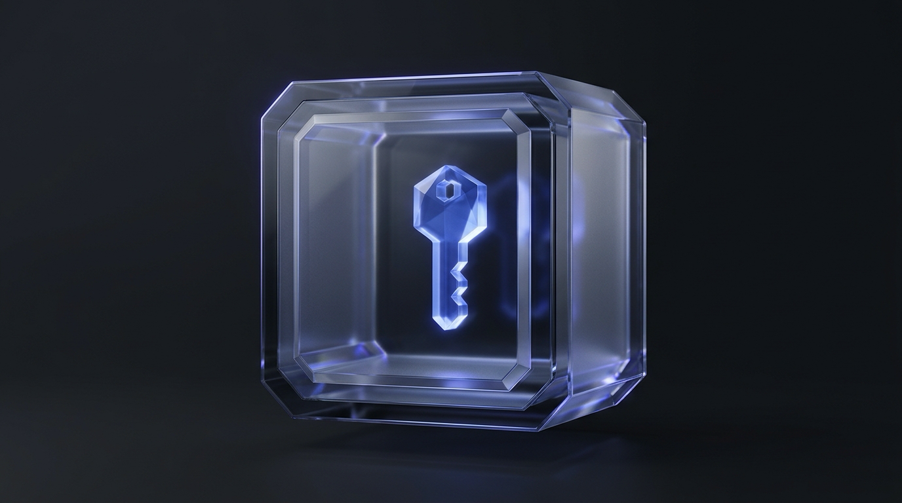

端到端零知识 & 私有部署
完全兼容 Bitwarden / Vaultwarden 1.37+ 协议，采用 Argon2id / PBKDF2 + HKDF + AES-256-CBC-HMAC 本地加解密。密钥生命周期使用 zeroize 自动擦除，SQLite 不落盘任何明文。
Keysmith 是一款本地优先、端到端零知识加密的跨平台密码与通行密钥管理器。以 Rust 驱动核心密码学引擎，告别 Electron 卡顿，完整兼容 Vaultwarden / Bitwarden 实时同步，并原生内置 OpenSSH Agent、屏幕二维码秒扫 2FA 与 Manifest V3 浏览器插件。
不再需要在闭源订阅付费和粗糙臃肿的开源客户端之间妥协。Keysmith 把企业级零知识密码学、极速原生交互与开发者生产力集成在同一个轻量客户端中。
完全兼容 Bitwarden / Vaultwarden 1.37+ 协议，采用 Argon2id / PBKDF2 + HKDF + AES-256-CBC-HMAC 本地加解密。密钥生命周期使用 zeroize 自动擦除，SQLite 不落盘任何明文。
安装包仅 ~10 MB，告别 Electron 内存占用。集成 macOS Touch ID 与 Windows Hello 无感解锁、Liquid Glass 毛玻璃视觉、防截屏保护与剪贴板自动倒计时清除。
浏览器扩展无缝接管 WebAuthn 注册与登录（支持 ES256、Ed25519 与 PRF 扩展），跨设备加密同步。添加一次性验证码支持全屏自动识别二维码或剪贴板导入。
内置 OpenSSH Ed25519 Agent（支持生物识别签名确认与一键配置 ~/.ssh/config）、命令行密钥注入（ks）、任意原生窗口 Auto-Type 自动键入，以及 19 种结构化条目模板。
SignalR WebSocket 实时推送 + 智能退避自愈，离线编辑自动入队并在网络恢复后无冲突合并。支持定时本地零知识加密快照与差旅模式（Travel Mode）。
支持 HIBP k-匿名泄露检测、弱密码与复用分析、缺少 2FA 与可升级 Passkey 提醒。桌面端与扩展全面支持中/英/日/韩/德/法/西等 8 种语言实时切换。
| 能力维度 | Keysmith | Bitwarden Desktop | 1Password |
|---|---|---|---|
| 自托管 Vaultwarden 协议 | ✅ 原生深度适配 (含 1.37+ / Passkey) | ✅ 原生支持 | ❌ 仅限官方云端 |
| 桌面端运行时与体积 | ⚡ Rust + Tauri v2（~10 MB DMG） | Electron（内存与体积较大） | Rust + Electron / Swift |
| 内置 OpenSSH Agent & 一键配置 | ✅ 内置 + 生物识别确认 + SSH Config | ⚠️ SSH Key 托管（无一键向导） | ✅ 内置 SSH Agent |
| 屏幕扫码自动识别 TOTP | ✅ 全屏自动/框选 + 剪贴板扫码 | ⚠️ 桌面端需手动输密钥 | ✅ 屏幕扫码识别 |
| 全局快捷浮窗 / 窗口自动键入 | ✅ ⌘⇧Space 快捷访问 + 原生 Auto-Type | ❌ 仅复制粘贴 | ✅ Quick Access |
| 开源协议与订阅费用 | ✅ MPL-2.0 开源 · 永久免费 | GPL / 商业版功能付费 | ❌ 闭源 · 个人/家庭按月付费 |

无论在线还是离线，Keysmith 坚持纯本地加解密原则：主密码通过 Argon2id 或 PBKDF2-SHA256 在本地派生主密钥，绝不上传至任何服务器；锁定或系统休眠瞬间立即触发 Zeroize 内存清零并撤销浮窗凭证。
告别明文存放在磁盘上的私钥和 `.env` 文件。Keysmith 在内存中为你托管 Ed25519 SSH 密钥与 API 凭证，并通过 Native Messaging 与浏览器扩展即时通信，实现账号、2FA 与 Passkey 的全自动填充与采集。
# Inject ks:// secrets via .env or environment variables (avoid passing ks:// in CLI argv)
ks run --env-file .env.ks -- npm run deploy
# Inspect vault sync & status from terminal
ks status && ks list --query "github"
# Built-in Ed25519 SSH Agent socket for ssh & git commit signing (enable SSH Agent in Settings first)
export SSH_AUTH_SOCK="$HOME/Library/Application Support/dev.keysmith.desktop/ssh-agent.sock"
ssh -T git@github.com核心加密、Vaultwarden 协议、TOTP 与 Passkey 引擎均封装在跨平台的 Rust `keysmith-core` 中，所有终端将共享同一套高安全审计底座与一致体验。
支持 Apple Silicon (arm64) 与 Intel (x64)。原生 Touch ID 无感解锁、Liquid Glass 毛玻璃、屏幕二维码秒扫、全局快捷访问及 Homebrew Cask 一键升级。
支持 Windows 10 / 11 (x64)，提供 NSIS (.exe) 与 MSI 安装包。支持 Windows Hello、GDI 屏幕扫码、Win32 Auto-Type 及浏览器注册表自动配置。
兼容 Chrome / Edge / Arc / Brave / Vivaldi。支持内联填充、WebAuthn Passkey 拦截保存与认证、SSO 登录自动接管以及安全密码生成器。
规划提供 AppImage / .deb / Flatpak 包，接入 Secret Service / Polkit 生物认证、Wayland/X11 自动键入，并完整复用 OpenSSH Agent 与 CLI 工具链。
通过 Swift + UniFFI 绑定 Rust `keysmith-core`，接入 Face ID / Touch ID 与系统 AutoFill Credential / Passkey Provider，在 iPhone 与 Safari 中原生无缝填充。
基于 Kotlin + Rust JNI 集成，支持 Android BiometricPrompt 生物解锁、系统 Autofill Framework 自动填充与 Jetpack Credential Manager 通行密钥托管。
v0.1.4 已就绪，提供 macOS / Windows 安装器、Homebrew Cask、命令行工具与浏览器扩展压缩包。
请务必携带完整的 tap 前缀 chrisyer/keysmith/keysmith，避免与 Homebrew 官方源中同名应用冲突。当前发布为本地 ad-hoc 签名，首次打开可在 macOS「隐私与安全性」中放行，或按提示手动执行 xattr -dr com.apple.quarantine /Applications/Keysmith.app。
brew tap chrisyer/keysmith https://github.com/chrisyer/Keysmith.git
brew install --cask chrisyer/keysmith/keysmith
# Upgrade to future releases
brew upgrade --cask chrisyer/keysmith/keysmith自动识别 Apple Silicon (arm64) 与 Intel (x64)，下载对应 DMG、校验 SHA-256 哈希并安装至 /Applications。
curl -fsSL https://raw.githubusercontent.com/chrisyer/Keysmith/v0.1.4/install.sh | sh前往 GitHub Releases 下载 Keysmith_0.1.4_x64-setup.exe (NSIS) 或 Keysmith_0.1.4_x64_en-US.msi 双击安装即可。启动后会自动配置浏览器的 NativeMessagingHosts 注册表。
# Latest Release Assets:
# - Keysmith_0.1.4_x64-setup.exe (NSIS Installer)
# - Keysmith_0.1.4_x64_en-US.msi (MSI Package)
# - keysmith-cli-0.1.4-x86_64-pc-windows-msvc.zip
https://github.com/chrisyer/Keysmith/releases/tag/v0.1.4可从 Release 下载预编译二进制包，或使用 Cargo 从源码构建 ks 与 keysmith-ssh-agent。
git clone https://github.com/chrisyer/Keysmith.git
cd Keysmith
cargo build --release -p keysmith-cli
./target/release/ks statusKeysmith 桌面端启动时已自动将扩展解压到系统应用目录并注册 Native Messaging。在浏览器扩展管理页开启开发者模式，点击「加载已解压的扩展程序」选中桌面端设置页打开的扩展目录即可（固定扩展 ID：ianpdijhflnmmhbmjdhiombdghhpfkmg）。
chrome://extensions
# 1. Enable "Developer mode"
# 2. In Keysmith Desktop → Settings → Browser Extension → "Open Extension Folder"
# 3. Click "Load unpacked" and select that folder